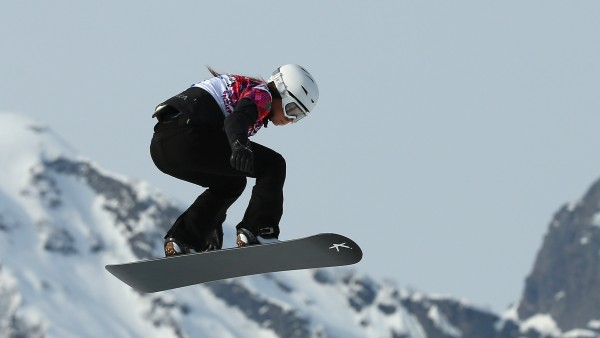

Бордъркрос е състезание по сноуборд. В него от 4 до 6 сноубордисти се спускат заедно по специално подготвено трасе, а победител става първият финиширал. Трасето за състезание по бордъркрос е скоростно с тесни и наклонени завои, различни видове бабуни за скокове, гладки и наклонени участъци, като целта е състезателят да запази контрол над борда докато развива максимална скорост. Обикновено в състезание по бордъркрос стартират четирима състезатели едновременно от стартова решетка в няколко кръга. От всеки кръг напред продължават само първите двама, а останалите отпадат. Състезанието се причислява към екстремните спортове поради повишения риск от травми и честото сблъскване между състезателите. Участниците се спускат с каски и други протектори. Бордъркросът е в програмата на зимните олимпийски игри от олимпиадата в Торино през 2006 година
Бордъркрос